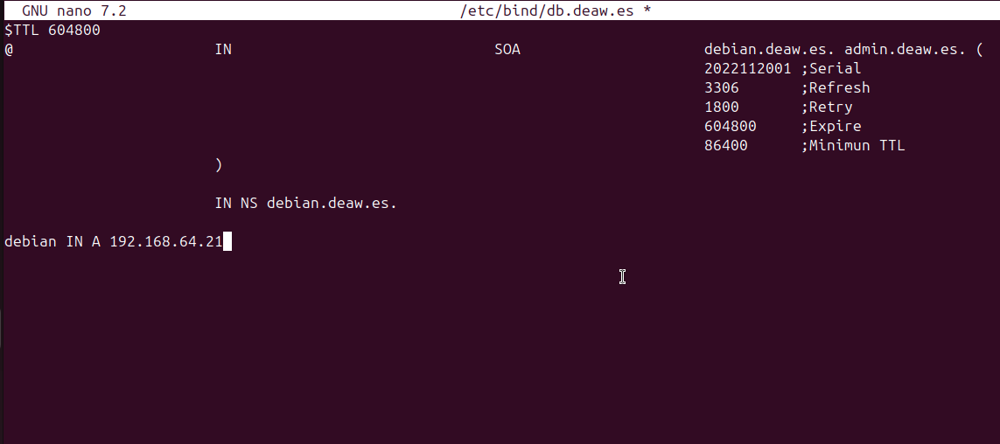

Práctica 4-1 Configuración de un servidor DNS
Para esta práctica, necesitaremos instalar ubuntu server en una nueva máquina virtual. Una vez la tengamos, procederemos con la práctica.
1.- Instalación de servidor DNS
Lo primero que deberemos de hacer, será instalar el servidor DNS usando el siguiente comando:
sudo apt-get install bind9 bind9utils bind9-doc
2.- Configuración del servidor DNS
Ahora, deberemos de editar el archivo de configuración de bind para que se usar IPv4.
Asi que lo primero que deberemos de hacer será:sudo nano /etc/default/named

Y le añadiremos a OPTIONS el valor de -u bind -4
3.- Configuración del archivo named.conf.options
Como buena práctica procederemos a hacer una copia de seguridad del archivo que tenemos creado para que, en el caso de que haya algún problema, tengamos un backup en el que apoyarnos.
Para ello vamos a introducir el siguiente comando en nuestra terminal: sudo cp /etc/bind/named.conf.options /etc/bind/named.conf.options.backup
Una vez ya realizado nuestro backup, prosigamos con la práctica. Ahora, vamos a proceder a editar el archivo named.conf.options con el siguiente comando: sudo nano /etc/bind/named.conf.options
Lo que realizaremos en el archivo será limitar el acceso a peticiones recursivas al servidor a aquellos host que nosotros queramos.
Para ello, agregaremos la siguiente línea al archivo:
acl confiables { 192.168.X.0/24 };.
Y tras forwarders deberemos agregar:
allow-recursion { confiables; };
allow-transfer { none; };
listen-on port 53{192.168.64.21;};
recursion yes;
Y comentaremos listen-on-v6.


Y comprobaremos si la configuración introducida es correcta con el siguiente comando: sudo named-checkconf

Y realizamos un restart y comprobamos el servicio:

4.- Configuración del archivo named.conf.local
Ahora, deberemos de declarar nuestra zona deaw.es.
Así que realizaremos un sudo nano /etc/bind/named.conf.local y añadiremos lo siguiente: zone "deaw.es" {type master;file "/etc/bind/db.deaw.es";};

5.- Configuración del archivo db.deaw.es
Ahora, deberemos de crear el archivo db.deaw.es en la ruta /etc/bind/.
Y añadirle lo siguiente: ```$TTL 604800 @ IN SOA debian.deaw.es. admin.deaw.es. ( 2022112001 ;Serial 3306 ;Refresh 1800 ;Retry 604800 ;Expire 86400 ;Minimun TTL )
IN NS debian.deaw.es.
debian IN A 192.168.64.21 ```

6.- Creación del archivo de zona para la resolución inversa
En este paso, en el archivo named.conf.local, deberemos de ingresar las zonas al igual que hicimos con la resolución directa y tras esto, crearemos un nuevo archivo para la resolución inversa.

Creación del archivo de la configuración de la zona inversa:

Y deberemos de cambiar nuestro documento resolv.conf del servidor para que se vea con su ip

Y cambiar en el cliente tambien el resolv.conf
7.- Comprobación de la configuración
8.- Comprobación del funcionamiento
Iremos al cliente y haremos las siguientes comprobaciones: